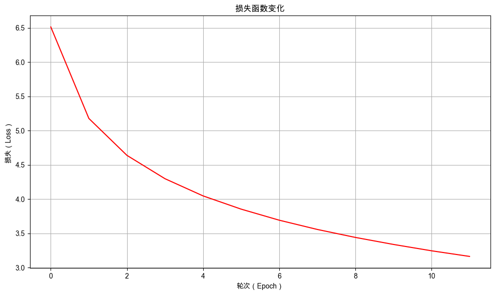

10. 穷举的困境：无限膨胀的类别#
通过本次任务，你将会尝试解决一个实际问题：如何让机器“理解”加法运算，并认知到分类模型的局限性。
10.1. 任务背景#
你的无人柠檬水摊生意越来越红火，甚至开始考虑发展连锁经营。但在统计每日销量时，你发现机器人虽然能熟练制作柠檬水，却完全不懂如何算账。于是你决定为它增加一项新技能：自动计算每日各种口味柠檬水的销售总量。
那么，如何让机器人学会加法计算呢？
你灵机一动，想到了一个“巧妙”的办法：既然你的机器人模型已经能够判断用户评价的情感分类，而加法计算的结果其实是有限的（例如，对于三位数加法，结果只在0到1998之间），何不将这个问题视为一个包含1999个类别的超大多分类任务呢？
有了思路，就让我们开始动手实现吧！
10.2. 任务鸟瞰#
10.2.1. 任务分析#
本次的任务是使用分类模型对三位数以内的加法运算进行预测。

10.2.2. 模型结构#
加法计算模型和情感分析模型从结构上看没有任何区别，只是分类类别从 2 个增加到 1999 个。模型结构如下：

下面我们进入实战部分，依然沿用 NLP 任务的通用开发流程组织本章内容：定义分词器、数据准备、模型定义、模型训练与模型评估。
在正式开始之前，先打印环境的版本号，避免因为环境不同而导致程序不能复现。
10.2.3. 环境版本#
from util import show_version
show_version()
本书愿景：
+------+--------------------------------------------------------+
| Info | 《动手学人工智能》 |
+------+--------------------------------------------------------+
| 作者 | 吾辈亦有感 |
| 哔站 | https://space.bilibili.com/3546632320715420 |
| 定位 | 基于'从零构建'的理念，用实战帮助程序员快速入门大模型。 |
| 愿景 | 若让你的AI学习之路走的更容易一点，我将倍感荣幸！祝好😄 |
+------+--------------------------------------------------------+
环境信息：
+-------------+--------------+------------------------+
| Python 版本 | PyTorch 版本 | PyTorch Lightning 版本 |
+-------------+--------------+------------------------+
| 3.12.12 | 2.9.1 | 2.6.0 |
+-------------+--------------+------------------------+
10.3. 准备数据#
10.3.1. 观察数据#
本项目是一个新的任务，我们先观察一下训练数据的格式。
# 打开文件并读取前5行
from util import show_first_n_lines
show_first_n_lines('./dataset/addition_train.txt', 5)
| 行数 | 内容 | |
|---|---|---|
| 0 | 1 | 12+991=1003 |
| 1 | 2 | 188+350=538 |
| 2 | 3 | 60+899=959 |
| 3 | 4 | 122+72=194 |
| 4 | 5 | 727+52=779 |
本次的数据集具有以下特征：
每条样本均为一个加法算式，其中等号前的问题是模型输入，等号后的答案是对应的监督标签。
词表规模较小，可采用字符级分词器，将每个字符（包括数字0-9、运算符“+”、“=”以及空格等）视为独立的 Token 进行处理。
数据集最多只支持三位数以内加法计算，所以模型输入序列的最大长度固定为 7。
由于两个三位数相加的结果范围在0至1998之间（两个三位数相加的最大值），模型需要应对近2000个类别的分类任务，分类数量较多。
处理数据时，需要将每一个样本根据等号进行分割，将等号前的问题作为输入，等号后的问题作为标签。具体过程如下所示：

10.3.2. 自定义分词器#
本次的词表规模较小，使用手动的方式构建分词器的词表，对算式进行编码时需要将较短的算式填充到最大长度 7。
10.3.2.1. 加法分词器的代码实现#
from util import print_table
import torch
class SimpleTokenizer:
def __init__(self, vocab, pad_token, unk_token):
"""
初始化简单分词器
"""
self.vocab = vocab
# 反向词汇表 (id -> token)
self.ids_to_tokens = {v: k for k, v in self.vocab.items()}
# 特殊token
self.pad_token = pad_token
self.pad_token_id = self.vocab[pad_token]
self.unk_token = unk_token
self.unk_token_id = self.vocab[unk_token]
self.special_tokens = [self.pad_token, self.unk_token]
# 词汇表大小
self.vocab_size = len(self.ids_to_tokens)
def encode(self, text):
# 将文本拆分为单个字符和特殊标记
tokens = self._tokenize_special_tokens(text)
# 将每个token转换为对应的token ID
input_ids = [self.vocab[token] for token in tokens if token in self.vocab]
return input_ids
def _tokenize_special_tokens(self, text):
# 识别并处理特殊标记
tokens = []
i = 0
while i < len(text):
# 检查是否匹配特殊标记
for token in self.special_tokens:
if text[i:i + len(token)] == token:
tokens.append(token)
i += len(token)
break
else:
# 如果不是特殊标记，则逐个字符处理
tokens.append(text[i])
i += 1
return tokens
def decode(self, input_ids, skip_special_tokens=True):
# 如果 input_ids 是 torch.Tensor，则转换为列表
if isinstance(input_ids, torch.Tensor):
input_ids = input_ids.squeeze().tolist()
# 将token ID序列转换为对应的字符
tokens = [self.ids_to_tokens.get(id) for id in input_ids]
# 去除开始符和结束符
if skip_special_tokens:
tokens = [token for token in tokens if token not in self.special_tokens]
return ''.join(tokens)
def pad_sequences(self, sequences, max_length):
"""
对序列进行填充或截断
"""
padded_sequences = []
for seq in sequences:
if len(seq) > max_length:
# 截断
padded_seq = seq[:max_length]
else:
# 填充
pad_length = max_length - len(seq)
padded_seq = seq + [self.pad_token_id] * pad_length
padded_sequences.append(padded_seq)
return padded_sequences
def __call__(self, texts, max_length=10):
"""
分词器主调用函数
"""
is_single_text = False
if isinstance(texts, str):
is_single_text = True
texts = [texts]
# 编码所有文本
all_token_ids = []
for text in texts:
token_ids = self.encode(text)
all_token_ids.append(token_ids)
# 填充或截断到统一长度
padded_token_ids = self.pad_sequences(all_token_ids, max_length)
if is_single_text:
padded_token_ids = padded_token_ids[0]
return padded_token_ids
def info(self):
"""
打印分词器的详细信息
"""
# 通用信息表
print_table("General Information", field_names=["Information", "Value"], data=[
["Vocabulary Size", self.vocab_size],
["Padding Token", f"{self.pad_token} (ID: {self.pad_token_id})"]
])
# 字符到ID的映射表
print_table("Token Mapping", field_names=["Token", "ID"], data=[
[char, char_id] for char, char_id in self.vocab.items()
])
# 编码解码示例表
example = "12+991" # 示例输入
print_table("Encoding and Decoding Example", field_names=["Input", "Encode", "Decode"], data=[
[example, self.encode(example), self.decode(self.encode(example))],
])
10.3.2.2. 加法分词器的使用实例#
使用手动构建的词表初始化分词器。其中，pad_token 为空格。
# 手动构建词表
vocab = {
"0": 0,
"1": 1,
"2": 2,
"3": 3,
"4": 4,
"5": 5,
"6": 6,
"7": 7,
"8": 8,
"9": 9,
"+": 10,
"=": 11,
" ": 12,
"<|unk|>": 13,
}
# 使用词表初始化分词器，并指定填充符和未知符
tokenizer = SimpleTokenizer(vocab, pad_token=" ", unk_token="<|unk|>")
tokenizer.info() # 打印分词器信息
General Information：
+-----------------+------------+
| Information | Value |
+-----------------+------------+
| Vocabulary Size | 14 |
| Padding Token | (ID: 12) |
+-----------------+------------+
Token Mapping：
+---------+----+
| Token | ID |
+---------+----+
| 0 | 0 |
| 1 | 1 |
| 2 | 2 |
| 3 | 3 |
| 4 | 4 |
| 5 | 5 |
| 6 | 6 |
| 7 | 7 |
| 8 | 8 |
| 9 | 9 |
| + | 10 |
| = | 11 |
| | 12 |
| <|unk|> | 13 |
+---------+----+
Encoding and Decoding Example：
+--------+---------------------+--------+
| Input | Encode | Decode |
+--------+---------------------+--------+
| 12+991 | [1, 2, 10, 9, 9, 1] | 12+991 |
+--------+---------------------+--------+
从分词器的编解码示例中可以看到，分词器成功的将输入算式编码成了 Token ID 列表，并且能正确解码回原始算式。
10.3.3. 加法数据转换器#
直接使用分词器将加法算式编码成指定长度的 Token ID 列表，对齐的过程如上图所示。
class TextTransform:
def __init__(self, tokenizer: SimpleTokenizer, max_length=20):
self.tokenizer = tokenizer
self.max_length = max_length
def __call__(self, text):
# 使用分词器对输入文本进行编码（会对较短的算式进行填充）
input_ids = self.tokenizer(text, self.max_length)
return torch.tensor(input_ids, dtype=torch.long)
10.3.4. 构造加法数据集#
构造加法数据集时，需要将每一个样本根据等号进行分割，将等号前的问题作为输入，等号后的问题作为标签。每一个样本会处理成如下格式：
{
"question": "12+991",
"answer": "1003",
"input_ids": tensor([ 1, 2, 10, 9, 9, 1, 12]),
"labels": 1003
}
question和answer为原始的问题和答案，便于后期评估模型的预测结果。input_ids是加法算式的 Token IDs，已被处理成 Tensor 格式，方便模型处理。labels是答案对应的分类 ID。
10.3.4.1. 加法数据集的代码实现#
from torch.utils.data import Dataset
class TextClassificationDataset(Dataset):
def __init__(self, texts, labels, transform: TextTransform):
self.texts = texts
self.labels = labels
self.transform = transform
def __len__(self):
return len(self.texts)
def __getitem__(self, idx):
text = self.texts[idx]
label = self.labels[idx]
input_ids = self.transform(text)
answer = str(label)
return {
"question": text, # 原始问题文本
"answer": answer, # 原始答案文本
'input_ids': input_ids,
'labels': label
}
@classmethod
def from_file(cls, file_path, transform: TextTransform):
"""
从txt文件加载数据集
txt格式应包含标签和文本，使用制表符分隔
"""
texts = []
labels = []
# 读取txt文件
with open(file_path, 'r', encoding='utf-8') as f:
for line in f:
if line.strip() == '': # 跳过空行
continue
try:
# 查找等号的位置，将行分割为问题和答案
idx = line.find('=')
# 将样本添加到列表中: (question, answer)，answer中去掉"="以及最后的"\n"
question = line[:idx]
answer = line[idx + 1:].strip()
texts.append(question)
labels.append(int(answer))
except Exception as e:
# 如果处理某行时出错，打印错误信息并跳过
print(f"Error processing line: {line}")
print(f"Error message: {e}")
continue
# 创建数据集实例
return cls(texts, labels, transform)
10.3.4.2. 创建加法数据集实例#
from pprint import pprint
# 最大长度（3位数 + '加号' + 3位数）
max_length = 7
# 1️⃣ 初始化分词器
tokenizer = SimpleTokenizer(vocab, pad_token=" ", unk_token="<|unk|>")
# 2️⃣ 初始化数据转换
transform = TextTransform(tokenizer, max_length=max_length)
# 3️⃣ 加载数据集
file_path = "./dataset/addition_train.txt"
dataset = TextClassificationDataset.from_file(file_path, transform=transform)
# 打印一条数据，观察数据转换结果
pprint(dataset[0], sort_dicts=False)
{'question': '12+991',
'answer': '1003',
'input_ids': tensor([ 1, 2, 10, 9, 9, 1, 12]),
'labels': 1003}
从打印的样本中可以看到，训练语料中的加法算式被处理成了正确的训练格式。原始的 6 位数加法算式被填充成了 7 位。
10.3.5. 创建加法数据模组#
加法数据模组继承自 LightningDataModule，用于加载训练、验证和测试数据集。
10.3.5.1. 加法数据模组的代码实现#
import lightning as L
from torch.utils.data import DataLoader
class TextDataModule(L.LightningDataModule):
def __init__(self, batch_size, transform: TextTransform, train_data_file, val_data_file="", test_data_file=""):
super().__init__()
# 数据集文件路径
self.train_data_file = train_data_file
self.val_data_file = val_data_file
self.test_data_file = test_data_file
# 数据集实例
self.test_dataset = None # 测试数据集实例
self.val_dataset = None # 验证数据集实例
self.train_dataset = None # 训练数据集实例
self.batch_size = batch_size
self.transform = transform
def prepare_data(self):
# 下载或准备数据集的操作（如果需要）
pass
def setup(self, stage=None):
# 加载训练数据集
self.train_dataset = TextClassificationDataset.from_file(self.train_data_file, transform=self.transform)
# 加载验证数据集
if self.val_data_file == "":
self.val_dataset = self.train_dataset
else:
self.val_dataset = TextClassificationDataset.from_file(self.val_data_file, transform=self.transform)
# 加载测试数据集
if self.test_data_file == "":
self.test_dataset = self.train_dataset
else:
self.test_dataset = TextClassificationDataset.from_file(self.test_data_file, transform=self.transform)
def train_dataloader(self):
# 返回训练数据的DataLoader，设置批次大小并打乱数据顺序
return DataLoader(self.train_dataset, batch_size=self.batch_size, shuffle=True)
def val_dataloader(self):
# 返回验证数据的DataLoader，设置批次大小，不打乱数据顺序
return DataLoader(self.val_dataset, batch_size=self.batch_size)
def test_dataloader(self):
# 返回测试数据的DataLoader，设置批次大小，不打乱数据顺序
return DataLoader(self.test_dataset, batch_size=self.batch_size)
10.3.5.2. 创建加法数据模组实例#
from pprint import pprint
# 最大长度（3位数 + '加号' + 3位数）
max_length = 7
# 1️⃣ 初始化分词器
tokenizer = SimpleTokenizer(vocab, pad_token=" ", unk_token="<|unk|>")
# 2️⃣ 初始化数据转换
transform = TextTransform(tokenizer, max_length=max_length)
# 3️⃣ 加载数据模组
text_datamodule = TextDataModule(batch_size=2, transform=transform, train_data_file="./dataset/addition_train.txt",
val_data_file="./dataset/addition_val.txt")
# 4️⃣ 调用 setup 方法初始化数据集
text_datamodule.setup()
print("数据集信息：")
print("训练集样本数量：", len(text_datamodule.train_dataset))
print("评估集样本数量", len(text_datamodule.val_dataset))
# 打印一个批次的数据
print("\n打印一个批次的数据：")
for batch in text_datamodule.train_dataloader():
pprint(batch, sort_dicts=False)
break
数据集信息：
训练集样本数量： 45000
评估集样本数量 5000
打印一个批次的数据：
{'question': ['89+65', '71+685'],
'answer': ['154', '756'],
'input_ids': tensor([[ 8, 9, 10, 6, 5, 12, 12],
[ 7, 1, 10, 6, 8, 5, 12]]),
'labels': tensor([154, 756])}
10.4. 构建加法计算模型#
加法计算模型继承自 LightningModule，模型结构如下：
本次任务只使用一个单向的GRU层，提取加法算式的语义信息。前向计算的过程如下所示：

10.4.1. 加法计算模型的代码实现#
本次的加法计算模型和之前的情感分析模型都是文本分类模型，因此模型的结构相似，这里不再赘述，只给出模型代码。
import torch
import lightning as L
from torch import nn
import torch.nn.functional as F
class TextClassifier(L.LightningModule):
def __init__(self, vocab_size, hidden_size, num_classes, learning_rate=0.01, dropout_p=0.1):
super(TextClassifier, self).__init__()
# 学习率, 用于设置优化器
self.learning_rate = learning_rate
# 标签id到标签的映射，用于预测解码
self.ids_to_labels = None
# 定义网络层
# 嵌入层：将词索引映射到高维向量
self.token_emb_layer = nn.Embedding(vocab_size, hidden_size)
# GRU层：用于处理序列数据
self.gru = nn.GRU(hidden_size, hidden_size, batch_first=True)
# Dropout层：防止过拟合
self.dropout = nn.Dropout(dropout_p)
# 输出层：将GRU的输出映射到标签空间
self.output_layer = nn.Linear(hidden_size, num_classes)
# 存储每个训练步骤和训练循环的损失
self.train_step_losses = []
self.train_epoch_losses = []
# 用于存储验证步骤的结果
self.validation_step_outputs = []
self.eval_accuracies = []
# 示例输入
self.example_input_array = torch.randint(0, vocab_size, (32, 7), dtype=torch.long)
def forward(self, input_ids):
"""前向传播"""
token_embeds = self.dropout(self.token_emb_layer(input_ids)) # 嵌入并应用dropout
gru_output, gru_hidden = self.gru(token_embeds) # 通过GRU处理, 得到输出和隐藏状态
# 取出最后一层的隐藏状态（对于单层GRU，索引为-1或0都可以）
last_hidden = gru_hidden[-1] # 形状: (batch_size, hidden_size)
# 将最后一个时间步的特征输入到输出层
out = self.output_layer(last_hidden) # 形状: (batch_size, num_classes)
return out
def training_step(self, batch, batch_idx):
"""训练步骤"""
input_ids = batch["input_ids"]
labels = batch["labels"]
# 前向传播
outputs = self(input_ids)
loss = F.cross_entropy(outputs, labels)
# 计算准确率
preds = torch.argmax(outputs, dim=1)
acc = (preds == labels).float().mean()
# 记录日志
self.log('train_loss', loss)
self.log('train_acc', acc)
# 存储损失以便后续使用
self.train_step_losses.append(loss.detach())
return loss
def on_train_epoch_end(self):
"""在每个训练epoch结束时计算整体损失"""
if self.train_step_losses: # 确保列表不为空
# 计算并记录平均训练损失
avg_train_loss = torch.stack(self.train_step_losses).mean()
self.train_epoch_losses.append({
"epoch": self.current_epoch,
"loss": avg_train_loss.item() # 转换为 Python 数值
})
# 清空列表为下一个 epoch 做准备
self.train_step_losses.clear()
def validation_step(self, batch, batch_idx):
"""验证步骤"""
input_ids = batch["input_ids"]
labels = batch["labels"]
# 前向传播
outputs = self(input_ids)
# 计算准确率
preds = torch.argmax(outputs, dim=1)
# 保存结果供epoch结束时使用
self.validation_step_outputs.append({'preds': preds, 'labels': labels})
def on_validation_epoch_end(self):
"""在每个验证epoch结束时计算整体准确率"""
# 汇总所有预测结果和标签
all_preds = torch.cat([x['preds'] for x in self.validation_step_outputs])
all_labels = torch.cat([x['labels'] for x in self.validation_step_outputs])
# 计算整体准确率
val_overall_acc = (all_preds == all_labels).float().mean()
# 记录整体准确率
self.log('total_samples', len(all_labels))
self.log('total_correct', (all_preds == all_labels).float().sum())
self.log('val_overall_acc', val_overall_acc)
# 将评估结果保存到 eval_accuracies 列表中
self.eval_accuracies.append({
"epoch": self.current_epoch, # epoch编号
"总样本数": len(all_labels), # 验证集总样本数
"正确样本数": int((all_preds == all_labels).float().sum().item()), # 预测正确的样本数
"准确率": round(val_overall_acc.item(), 4) # 准确率
})
# 清空缓存
self.validation_step_outputs.clear()
def clear_cache(self):
"""清除缓存"""
self.train_step_losses.clear()
self.train_epoch_losses.clear()
self.validation_step_outputs.clear()
self.eval_accuracies.clear()
def configure_optimizers(self):
"""配置优化器"""
optimizer = torch.optim.Adam(self.parameters(), lr=self.learning_rate)
return optimizer
def setup_label_map(self, ids_to_labels=None):
"""根据数据集设置标签映射"""
self.ids_to_labels = ids_to_labels
def predict(self, input_ids):
"""
对新数据进行预测
Args:
input_ids: 输入特征，可以是单个样本或批量样本
Returns:
predictions: 预测的标签索引
decoded_predictions: 解码后的标签名称
probabilities: 预测概率
"""
# 确保模型处于评估模式
self.eval()
# 【新增】判断输入类型并处理
if isinstance(input_ids, list):
input_ids = torch.stack(input_ids) # 转换为张量
# 确保输入是tensor格式
if not isinstance(input_ids, torch.Tensor):
input_ids = torch.tensor(input_ids, dtype=torch.float32)
# 预测
with torch.no_grad():
outputs = self(input_ids)
predictions = torch.argmax(outputs, dim=1).tolist()
probabilities = torch.softmax(outputs, dim=1).tolist()
# 解码预测结果
decoded_predictions = [self.ids_to_labels[pred] for pred in predictions]
return predictions, decoded_predictions, probabilities
def decode_labels(self, label_ids):
"""
将标签ID解码为标签名称
Args:
label_ids: 标签ID列表
Returns:
decoded_labels: 解码后的标签名称列表
"""
if isinstance(label_ids, torch.Tensor):
label_ids = label_ids.tolist()
return [self.ids_to_labels[label_id] for label_id in label_ids]
10.4.2. 加法计算模型的详细信息#
from lightning.pytorch.utilities.model_summary import ModelSummary
# 创建从0到1998的ids_to_labels映射（用于三位数以内的加法）
ids_to_labels = {i: str(i) for i in range(1999)}
# 创建加法计算模型实例
model = TextClassifier(vocab_size=tokenizer.vocab_size, hidden_size=128, num_classes=len(ids_to_labels),
learning_rate=0.001)
summary = ModelSummary(model, max_depth=-1)
print(summary)
| Name | Type | Params | Mode | FLOPs | In sizes | Out sizes
-------------------------------------------------------------------------------------------------------------
0 | token_emb_layer | Embedding | 1.8 K | train | 0 | [32, 7] | [32, 7, 128]
1 | gru | GRU | 99.1 K | train | 44.0 M | [32, 7, 128] | [[32, 7, 128], [1, 32, 128]]
2 | dropout | Dropout | 0 | train | 0 | [32, 7, 128] | [32, 7, 128]
3 | output_layer | Linear | 257 K | train | 16.4 M | [32, 128] | [32, 1999]
-------------------------------------------------------------------------------------------------------------
358 K Trainable params
0 Non-trainable params
358 K Total params
1.435 Total estimated model params size (MB)
4 Modules in train mode
0 Modules in eval mode
60.4 M Total Flops
从模型摘要中可以看到：嵌入层 token_emb_layer 的输入形状为 [32,7 ] 对应着 (batch_size, max_length)；输出层 output_layer 的输出形状为 [32, 1999] 对应着 (batch_size, num_classes)。也就是说，这是一个将序列长度为 7 的文本分成 1999 个类别的文本分类模型。
10.5. 模型的训练与评估#
10.5.1. 初始化模型和训练器#
# 超参数配置
max_length = 7 # 最大长度
batch_size = 32 # 批量大小
# 1️⃣ 初始化分词器
tokenizer = SimpleTokenizer(vocab, pad_token=" ", unk_token="<|unk|>")
# 2️⃣ 初始化数据转换
transform = TextTransform(tokenizer, max_length=max_length)
# 3️⃣ 加载数据模组
file_path = "./dataset/addition_train.txt"
datamodule = TextDataModule(batch_size=batch_size, transform=transform, train_data_file=file_path)
# 4️⃣ 初始化模型
model = TextClassifier(vocab_size=tokenizer.vocab_size, hidden_size=128, num_classes=len(ids_to_labels),
learning_rate=0.001)
# 5️⃣ 初始化训练器
# max_epochs=12: 最大训练轮数为12
# log_every_n_steps=3: 每3个步骤记录一次日志
# check_val_every_n_epoch=1: 每1个epoch进行一次验证
# num_sanity_val_steps=0: 验证集的初始检查次数，设置为0表示不进行初始检查
# enable_progress_bar=False: 不显示进度条
trainer = L.Trainer(max_epochs=12, log_every_n_steps=3, check_val_every_n_epoch=1, num_sanity_val_steps=0,
enable_progress_bar=False)
💡 Tip: For seamless cloud uploads and versioning, try installing [litmodels](https://pypi.org/project/litmodels/) to enable LitModelCheckpoint, which syncs automatically with the Lightning model registry.
GPU available: True (mps), used: True
TPU available: False, using: 0 TPU cores
10.5.2. 训练前评估#
训练前评估为模型性能建立初始性能基准。
# 直接调用验证函数进行评估
trainer.validate(model=model, datamodule=datamodule)
┏━━━━━━━━━━━━━━━━━━━━━━━━━━━┳━━━━━━━━━━━━━━━━━━━━━━━━━━━┓ ┃ Validate metric ┃ DataLoader 0 ┃ ┡━━━━━━━━━━━━━━━━━━━━━━━━━━━╇━━━━━━━━━━━━━━━━━━━━━━━━━━━┩ │ total_correct │ 55.0 │ │ total_samples │ 45000.0 │ │ val_overall_acc │ 0.0012222222285345197 │ └───────────────────────────┴───────────────────────────┘
[{'total_samples': 45000.0,
'total_correct': 55.0,
'val_overall_acc': 0.0012222222285345197}]
加法计算器训练前评估的初始准确率为 0.12%。
10.5.3. 训练模型#
调用 trainer.fit() 训练 12 个轮次。
model.clear_cache()
trainer.fit(model=model, datamodule=datamodule)
┏━━━┳━━━━━━━━━━━━━━━━━┳━━━━━━━━━━━┳━━━━━━━━┳━━━━━━━┳━━━━━━━━┳━━━━━━━━━━━━━━┳━━━━━━━━━━━━━━━━━━━━━━━━━━━━━━┓ ┃ ┃ Name ┃ Type ┃ Params ┃ Mode ┃ FLOPs ┃ In sizes ┃ Out sizes ┃ ┡━━━╇━━━━━━━━━━━━━━━━━╇━━━━━━━━━━━╇━━━━━━━━╇━━━━━━━╇━━━━━━━━╇━━━━━━━━━━━━━━╇━━━━━━━━━━━━━━━━━━━━━━━━━━━━━━┩ │ 0 │ token_emb_layer │ Embedding │ 1.8 K │ train │ 0 │ [32, 7] │ [32, 7, 128] │ │ 1 │ gru │ GRU │ 99.1 K │ train │ 44.0 M │ [32, 7, 128] │ [[32, 7, 128], [1, 32, 128]] │ │ 2 │ dropout │ Dropout │ 0 │ train │ 0 │ [32, 7, 128] │ [32, 7, 128] │ │ 3 │ output_layer │ Linear │ 257 K │ train │ 16.4 M │ [32, 128] │ [32, 1999] │ └───┴─────────────────┴───────────┴────────┴───────┴────────┴──────────────┴──────────────────────────────┘
Trainable params: 358 K Non-trainable params: 0 Total params: 358 K Total estimated model params size (MB): 1 Modules in train mode: 4 Modules in eval mode: 0 Total FLOPs: 60.4 M
`Trainer.fit` stopped: `max_epochs=12` reached.
10.5.3.1. 训练过程可视化#
绘制训练过程中损失值的变化曲线。
from util import plot_training_loss
plot_training_loss(model.train_epoch_losses)

10.5.3.2. 查看模型评估记录#
查看训练过程中的评估结果，观察模型在验证集上的表现。
from util import show_table
show_table(model.eval_accuracies)
| epoch | 总样本数 | 正确样本数 | 准确率 | |
|---|---|---|---|---|
| 0 | 0 | 45000 | 737 | 0.0164 |
| 1 | 1 | 45000 | 1512 | 0.0336 |
| 2 | 2 | 45000 | 2329 | 0.0518 |
| 3 | 3 | 45000 | 3247 | 0.0722 |
| 4 | 4 | 45000 | 4088 | 0.0908 |
| 5 | 5 | 45000 | 4883 | 0.1085 |
| 6 | 6 | 45000 | 5516 | 0.1226 |
| 7 | 7 | 45000 | 6246 | 0.1388 |
| 8 | 8 | 45000 | 7004 | 0.1556 |
| 9 | 9 | 45000 | 7671 | 0.1705 |
| 10 | 10 | 45000 | 8155 | 0.1812 |
| 11 | 11 | 45000 | 8831 | 0.1962 |
在训练过程中，模型在验证集上的准确率不断提高，说明模型的训练是有效的。
10.5.4. 训练后评估#
# 直接调用验证函数进行评估
trainer.validate(model=model, datamodule=datamodule)
┏━━━━━━━━━━━━━━━━━━━━━━━━━━━┳━━━━━━━━━━━━━━━━━━━━━━━━━━━┓ ┃ Validate metric ┃ DataLoader 0 ┃ ┡━━━━━━━━━━━━━━━━━━━━━━━━━━━╇━━━━━━━━━━━━━━━━━━━━━━━━━━━┩ │ total_correct │ 8831.0 │ │ total_samples │ 45000.0 │ │ val_overall_acc │ 0.19624444842338562 │ └───────────────────────────┴───────────────────────────┘
[{'total_samples': 45000.0,
'total_correct': 8831.0,
'val_overall_acc': 0.19624444842338562}]
模型经过训练后，预测准确率从 0.12% 提升至 19.62%，准确率虽然提升明显，但最终的准确率仍然较低。
10.6. 使用模型进行预测#
使用一些测试算式进行推理预测，直观观察模型的预测效果。
from util import print_classification_results
# 1️⃣ 创建一些测试问题和答案
questions = ["829+33", "58+136", "22+593", "243+269", "1+1"]
answers = [862, 194, 615, 512, 2]
# 2️⃣ 使用与训练时统一的 transform 方法对文本进行处理
input_ids = []
for text in questions:
# 使用训练时相同的 transform 方法
transformed = transform(text)
input_ids.append(transformed)
# 3️⃣ 使用模型进行预测
model.setup_label_map(ids_to_labels=ids_to_labels)
predictions, decoded_predictions, probabilities = model.predict(input_ids)
# 4️⃣ 展示预测结果
print_classification_results(questions, answers, predictions, probabilities, model.ids_to_labels)
🎯 分类预测结果 (准确率: 1/5 = 20.00%)：
+---------+----------+----------+----------+------+
| 输入 | 真实标签 | 预测标签 | 最高概率 | 标记 |
+---------+----------+----------+----------+------+
| 829+33 | 862 | 858 | 0.3014 | ☒ |
| 58+136 | 194 | 188 | 0.0898 | ☒ |
| 22+593 | 615 | 624 | 0.1876 | ☒ |
| 243+269 | 512 | 512 | 0.1053 | ☑ |
| 1+1 | 2 | 8 | 0.1936 | ☒ |
+---------+----------+----------+----------+------+
本次的加法计算模型预测正确率只有 20%，表现很差，需要进一步优化模型。
10.7. 泛化能力评估#
from util import print_red
datamodule2 = TextDataModule(batch_size=batch_size, transform=transform,
train_data_file="./dataset/addition_train.txt",
val_data_file="./dataset/addition_val.txt")
print_red("在训练集上评估：")
trainer.validate(model=model, datamodule=datamodule)
print_red("在评估集上评估：")
trainer.validate(model=model, datamodule=datamodule2)
在训练集上评估：
┏━━━━━━━━━━━━━━━━━━━━━━━━━━━┳━━━━━━━━━━━━━━━━━━━━━━━━━━━┓ ┃ Validate metric ┃ DataLoader 0 ┃ ┡━━━━━━━━━━━━━━━━━━━━━━━━━━━╇━━━━━━━━━━━━━━━━━━━━━━━━━━━┩ │ total_correct │ 8831.0 │ │ total_samples │ 45000.0 │ │ val_overall_acc │ 0.19624444842338562 │ └───────────────────────────┴───────────────────────────┘
在评估集上评估：
┏━━━━━━━━━━━━━━━━━━━━━━━━━━━┳━━━━━━━━━━━━━━━━━━━━━━━━━━━┓ ┃ Validate metric ┃ DataLoader 0 ┃ ┡━━━━━━━━━━━━━━━━━━━━━━━━━━━╇━━━━━━━━━━━━━━━━━━━━━━━━━━━┩ │ total_correct │ 246.0 │ │ total_samples │ 5000.0 │ │ val_overall_acc │ 0.04919999837875366 │ └───────────────────────────┴───────────────────────────┘
[{'total_samples': 5000.0,
'total_correct': 246.0,
'val_overall_acc': 0.04919999837875366}]
模型在评估集上的准确率只有 4.91%，过拟合现象严重，但模型泛化能力很弱。
10.8. 本章小结#
本次的项目我们试图使用文本分类模型解决加法计算问题。虽然可以通过将每个可能的结果视为一个独立的类别来进行预测，但这种方法会导致分类类型的总数急剧增加，导致模型参数剧增、训练数据稀疏且无法泛化到未见过的值，此外，当面对更大范围的数值或更复杂的运算时，这种穷举分类的方法变得不可行，因为类别数量会呈指数级增长，严重影响模型的性能和实用性。
而文本生成方法通过将加法转化为序列生成任务（如逐位预测数字），仅需有限字符集即可建模任意长度加法，避免了类别爆炸问题，显著提升模型的可扩展性与泛化能力。在下一章中，我们将介绍如何使用文本生成方法来解决加法计算问题。